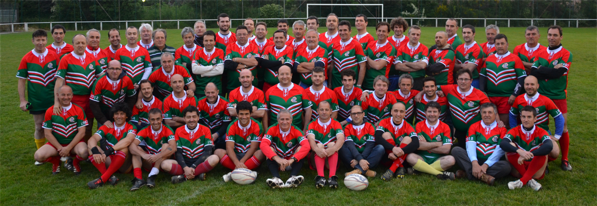

Cinquante mecs entre vingt-cinq et soixante-dix ans (pardon Jeannot) qui, depuis plus de 25 ans, gambadent joyeusement à la poursuite d’un ballon ovale, sur un terrain coincé quelque part entre les immeubles de Montaudran, ça a quelque chose de… je ne sais pas.
Couillon, peut-être.
Mais de ce genre de couillonnerie qui force le respect.
Ça fait plus de 25 ans que le club existe avec le même noyau, le même mot d’ordre, le même esprit : se faire plaisir. Et se faire plaisir, comme le dit Tix-l’entraîneur, ça veut aussi dire courir, souffler, souffrir, soutenir, tenir, continuer. Ça veut dire jouer au rugby – ce sport étrange, quelque part entre guerre des clans et partie d’échec à grands coups de mêlées, qui apprend d’abord à respecter l’adversaire pour mieux se respecter soi.
Ça fait plus de 25 ans, et on court toujours. Même si on n’est plus des lapereaux de l’année, le rugby nous garde jeunes. Et si on est vieux, c’est juste comme dans vieux copains – et ça, ça fait toute la différence.
Deux entraînements par semaine, une quinzaine de matches dans l’année ; un week-end ski annuel, quelques bons gueuletons et autres festivités ; et, tous les deux ans, une tournée internationale (bon, d’accord, un voyage) : les Gonins, c’est à la fois un club, un groupe de copains et une famille.
Pour en savoir plus, il faut nous rencontrer. Sur le terrain, évidemment.
On prend le coup d’envoi.
